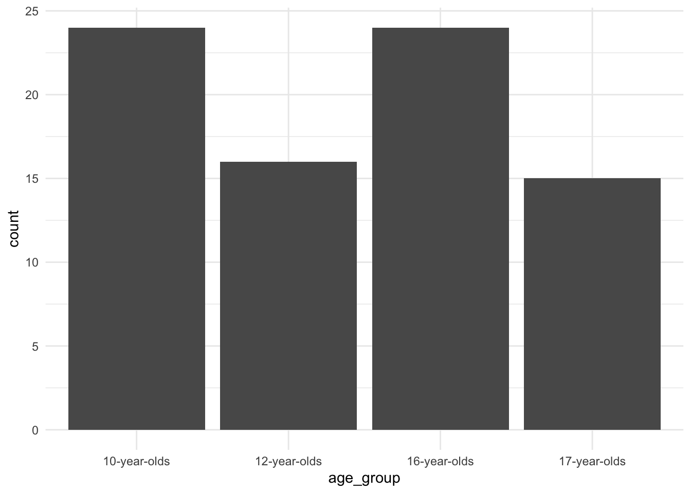
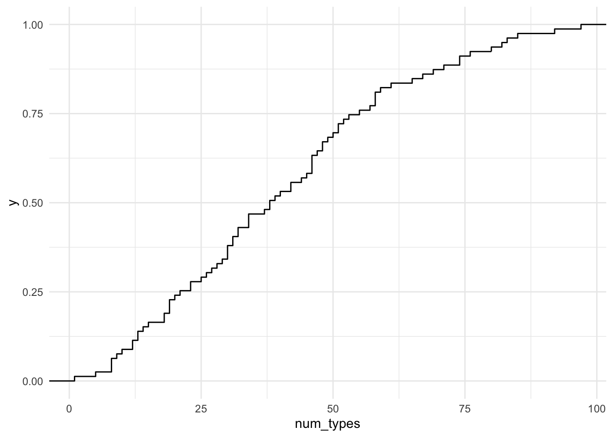
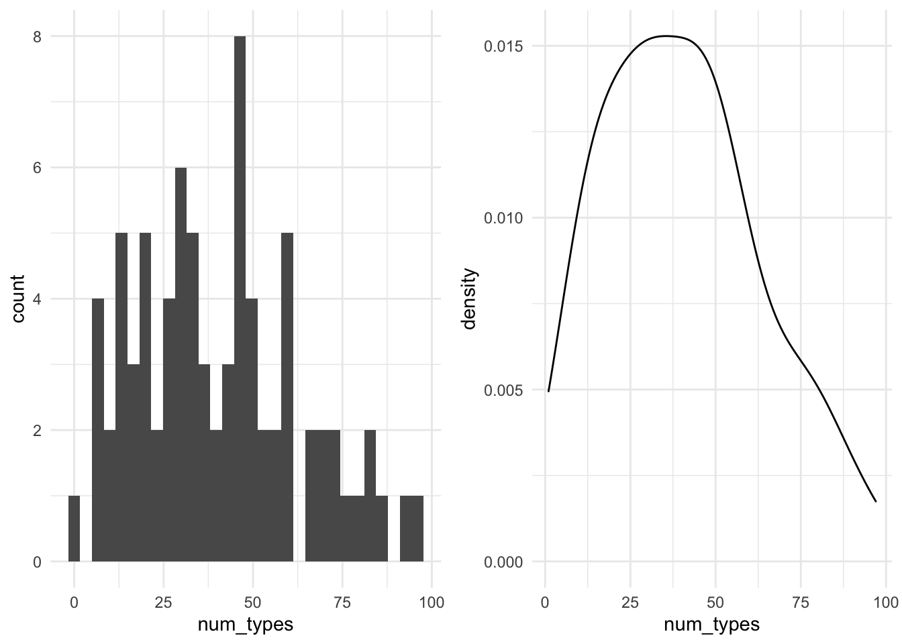
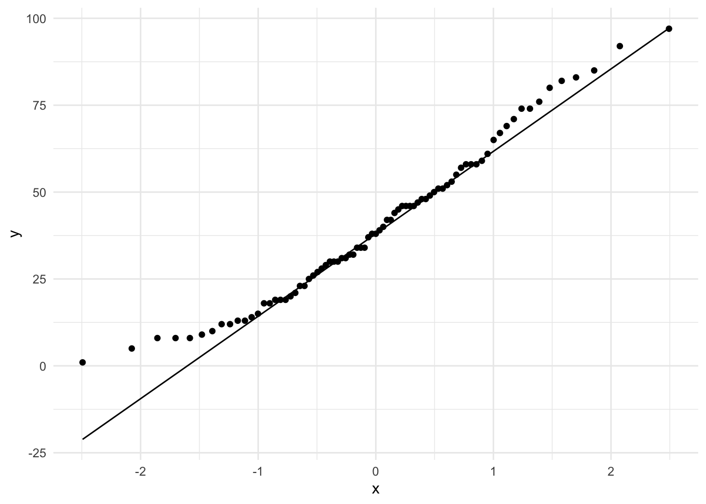
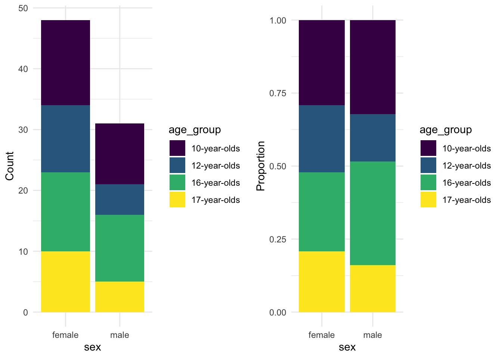
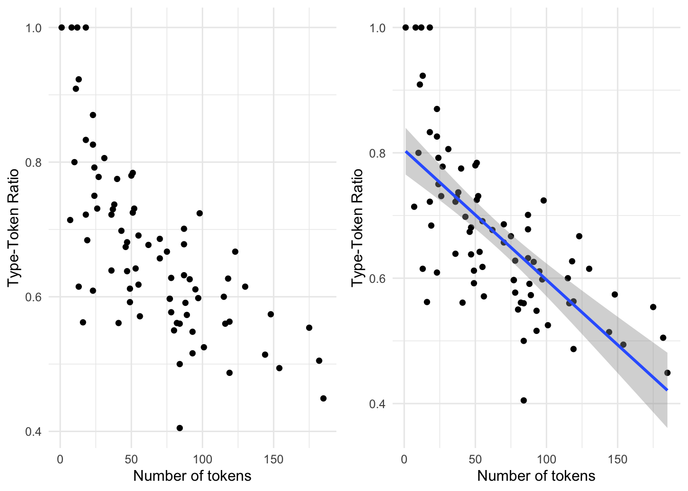
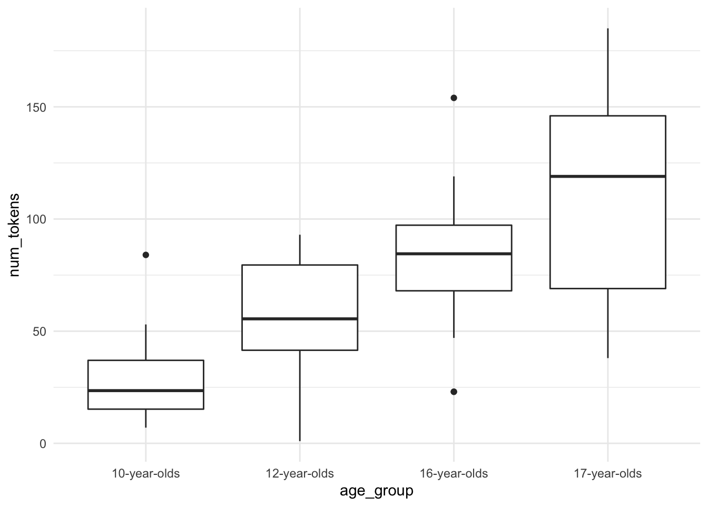

In this Recipe we will build on our R coding skills to implement descriptive assessment of datasets.
We will be using a dataset drawn from the Barcelona English Language Corpus (Carmen Muñoz 2007; Carme Muñoz 2006). The corpus includes a series of tasks that aim to provide data on the effects of age on the acquisition of English as a foreign language (EFL). The task selected here is the “Written composition” which comprises written essays by students from Barcelona ranging from 10 to 17 years of age.
Let’s read the curated dataset1.
# read the `belc` dataset from an .rds file
belc <- read_rds(file = "data/rds/belc.rds")In R there is a set of fundamental vector types which are used for distinct informational value types and these vector types are associated with either categorical- (character and logical) and continuous-types (integer and double). A couple things to note: first, character and logical vectors can be re-typed as a more complex vector type called a factor. Factors allow us to encode order to the character vectors (say for ordinal variables) and assign numeric values to the character vector to allow for us to do mathematical operations. We will how factors work later. Second, both integer and doubles are also called numeric vectors. The difference between integer and doubles is that doubles allow for decimal places, whereas integers are whole numbers.
The belc dataset reflects a summary of each of the essays by each of the students and includes the number of word tokens (num_tokens), the number of word types (num_types) and the ratio of tokens to types (ttr). The structure of the dataset (belc) is seen below.
## Rows: 79
## Columns: 6
## $ participant_id <chr> "L02", "L05", "L10", "L11", "L12", "L16", "L22", "L27",…
## $ age_group <chr> "10-year-olds", "10-year-olds", "10-year-olds", "10-yea…
## $ sex <chr> "female", "female", "female", "female", "female", "fema…
## $ num_tokens <int> 12, 18, 36, 10, 41, 13, 47, 8, 84, 53, 18, 16, 7, 24, 3…
## $ num_types <int> 12, 15, 26, 8, 23, 12, 30, 8, 34, 34, 13, 9, 5, 18, 23,…
## $ ttr <dbl> 1.000, 0.833, 0.722, 0.800, 0.561, 0.923, 0.638, 1.000,…As we see from the overview of the belc dataset, we have character, integer and double vector types in the data frame. Therefore this dataset contains three categorical (participant_id, age_group, and sex) and three continuous variables (num_tokens, num_types, and ttr).
Now let’s look at approaching descriptive summaries using the belc dataset. First we will look at single vector summaries and then we will look at multiple vector summaries. The type of summary that we will apply will depend on the type of values that a variable contains, that is whether the values are categorical or continuous.
To prepare to work with the categorical data, let’s re-type the categorical variables (participant_id, age_group and sex) as factors. To apply the as.factor() function to all the character vectors I make use of the mutate_if() function which allows me to target only the vectors in the dataset that are of type character. Since the age_group variable is ordinal we will explicitly encode that order. Again, the mutate() function is called but only targets the age_group vector.
belc <-
belc %>%
mutate_if(is.character, as.factor) %>% # create factors from character variables
mutate(age_group = factor(age_group, ordered = TRUE)) # create ordered variable for age_groupNow let’s take a look at the dataset.
glimpse(belc) # dataset overview## Rows: 79
## Columns: 6
## $ participant_id <fct> L02, L05, L10, L11, L12, L16, L22, L27, L28, L29, L41, …
## $ age_group <ord> 10-year-olds, 10-year-olds, 10-year-olds, 10-year-olds,…
## $ sex <fct> female, female, female, female, female, female, female,…
## $ num_tokens <int> 12, 18, 36, 10, 41, 13, 47, 8, 84, 53, 18, 16, 7, 24, 3…
## $ num_types <int> 12, 15, 26, 8, 23, 12, 30, 8, 34, 34, 13, 9, 5, 18, 23,…
## $ ttr <dbl> 1.000, 0.833, 0.722, 0.800, 0.561, 0.923, 0.638, 1.000,…Now we have factors instead of character vectors for our categorical variables.
Categorical
To get a descriptive summary of the categorical variables I will use the skimr package (Waring et al. 2021) and call the skim() function and then pipe these results to yank() and target only the factor variables.
Variable type: factor
| skim_variable | n_missing | complete_rate | ordered | n_unique | top_counts |
|---|---|---|---|---|---|
| participant_id | 0 | 1 | FALSE | 36 | L05: 3, L10: 3, L11: 3, L12: 3 |
| age_group | 0 | 1 | TRUE | 4 | 10-: 24, 16-: 24, 12-: 16, 17-: 15 |
| sex | 0 | 1 | FALSE | 2 | fem: 48, mal: 31 |
From this output we see a host of descriptive information about our categorical variables. What is important to note is that categorical variables are summarized by counts. The most common value for a categorical variable is called the mode. If we want to look at a specific variable, say age_group we can use the tabyl() function from the janitor package (Firke 2021).
| age_group | n | percent |
|---|---|---|
| 10-year-olds | 24 | 0.304 |
| 12-year-olds | 16 | 0.203 |
| 16-year-olds | 24 | 0.304 |
| 17-year-olds | 15 | 0.190 |
We see that the tabyl() function provides the counts but also the proportions of each of the values of the age_group variable. Note that when working with factors the values are often called ‘levels.’ We can see that this variable has two levels with the same count. This characterizes what is called a bimodal distribution as there are two most frequent levels.
Tabular summaries are often the most effective way to assess categorical variables, but let’s set the stage for working with plotting in R.
Among other package, the tidyverse package load the ggplot2 package (Wickham et al. 2021) which is a powerful package for creating plots in R. The ‘gg’ in ggplot2 refers to the use of “The Grammar of Graphics” approach to building plots. There are three basic elements for all ggplot2 plots: (1) data, (2) mappings, and (3) geometries. The data is, of course, the dataset that we want to use. The mappings used to select the variables to be used in the plot and how the variables are to be mapped to the plotting space. Finally the geometries specify how the mappings are organized.2
Let’s create a simple plot for the age_group variable. First we pass the datset to ggplot(). The ggplot() function then requires that we provide the aesthetic mappings aes() in this case we have one variable and so we will want this variable to appear on the x axis. The geom_bar() function by default will then count the levels of our age_group factor variable and plot them on the y axis.
 There we go. Not a particularly informative plot, given we are only looking at a single categorical variable, but we will build on this basic formula to creat more informative graphics.
Note that the equivalent of the %>% for building ggplot2 plots is the + operator. This can be confusing, but it is important to recognize this distinction as it is easily overlooked and can cause unexpected errors.
Continuous
Now let’s turn to continuous variables. Where tabular summaries of categorical variables makes sense, this is not the case for continuous variables as by definition a continuous variable is not count-based but rather the values range along a continuum. Let’s look at what the basic descriptives are for out continuous variables with skim() (this time selecting only the numeric variables).
Variable type: numeric
| skim_variable | n_missing | complete_rate | mean | sd | p0 | p25 | p50 | p75 | p100 | hist |
|---|---|---|---|---|---|---|---|---|---|---|
| num_tokens | 0 | 1 | 66.23 | 43.90 | 1.00 | 29.00 | 55.00 | 90.00 | 185 | ▇▇▇▃▁ |
| num_types | 0 | 1 | 40.25 | 22.80 | 1.00 | 22.00 | 38.00 | 54.00 | 97 | ▆▇▇▃▂ |
| ttr | 0 | 1 | 0.67 | 0.13 | 0.41 | 0.57 | 0.64 | 0.73 | 1 | ▂▇▅▂▂ |
Here we see that the type of summary information is not count-based, rather we have a new set of descriptives. The mean and sd (standard deviation) are easy to identify and straightforward. The summaries prefixed with p represent the percentiles, in this case we have five percentile points (0, 25, 50, 75, 100), which slice the percentile space in four ranges therefore we call these the quartiles. These values are often called the ‘five-number summary.’ The 50th percentile is also known as the median. The five number summary provides a numerical view of the distribution of a continuous variable. Another use of these quartiles. is to calculate the range between the 25th and 75th quantile, (50% of the values), known as the Interquartile Range (IQR). This gives us a more precise estimate of the distribution as it does not include extreme values (above or below the IQR).
We can calculate this measure manually, or just apply the IQR() function.
IQR(belc$num_types) # calculate iqr for `num_types`## [1] 32Where with categorical variables tabular formats are often the most informative way to understand a variable, for continuous variables plots are the most informative. Let’s now create some plots which provide views of the distribution of the num_types variable.
Picking up with the quantiles, we can create an Empirical Cumulative Distribution Frequency (ECDF) plot which will give us an understanding of the proportions of the values along a continuous percentile range.
belc %>% # dataset
ggplot(aes(x = num_types)) + # map `num_types` to x
stat_ecdf(geom = "step") # generate the cumulative distribution Here we can graphically inspect the points that intersect on the x and y axis to estimate the percentile of the values that have some number of unique words. We can also get a specific determination by using the following functions. Let’s say we want to know how many number of unique words are in the lower 10% of the written compositions from BELC.
ecdf(belc$num_tokens) %>% # calculate the cumulative distribution
quantile(.1) # pull the value for the 10th percentile## 10%
## 15.4Now let’s move towards looking at distributions. This is done by creating either a histogram or a density plot. Let’s plot both here. I will assign each plot to an object and then have them output side-by-side using the gridExtra package (Auguie 2017)
p1 <-
belc %>% # dataset
ggplot(aes(x = num_types)) + # map `num_types` to x
geom_histogram() # create histogram
p2 <-
belc %>% # dataset
ggplot(aes(x = num_types)) + # map `num_types` to x
geom_density() # create density plot
gridExtra::grid.arrange(p1, p2, ncol = 2) # arrange both plots in two columns
As you can see, a histogram also provides count information, like we saw with categorical variables. However, the counts here are based on binned groups, that is, a range of values are calculated that span the entire value space and then values that fall within one of these bins (ranges) are counted. The size of the bin range can be adjusted, but we’ve just gone with the default (in this case bins = 30). The density plot uses proportions to provide an more continuous view of the distribution. Both plot types have their advantages. In the case of histograms it can be easier to identify outliers while density plots can help us determine more easily if the distribution is normal or skewed (left or right). As we will see, identifying outliers and determining the type of distribution we are working with will be useful downstream in certain types of analysis approaches.
On the topic of normal distributions, let’s look at a useful plot for assessing the extent to which a continuous variable is normally distributed –the Quantile-Quantile plots (QQ Plot).
belc %>% # dataset
ggplot(aes(sample = num_types)) + # map `num_types` to sample
stat_qq() + # calculate the sample and theoretical quantiles points
stat_qq_line() # plot the theoretical line In QQ-plots the more the points diverge from the line, the less likely that the distribution is normal.
Now we turn our attention to working with multiple variables. We will first look at variables of the same type, and then look at describing variables of distinct types.
Categorical
Just was with descriptions of single categorical variables, tabular summaries are very useful. When there are multiple categorical variables, we cross-tabulate. That is, that each of the values of one variable are tabulated for the each value of the other variable(s).
Let’s do a cross-tabulation of the age_group and sex variables. Again we will use the tabyl() function but this time with two variables.
| age_group | female | male |
|---|---|---|
| 10-year-olds | 14 | 10 |
| 12-year-olds | 11 | 5 |
| 16-year-olds | 13 | 11 |
| 17-year-olds | 10 | 5 |
We can also add proportions to this cross-tabulation by adding the adorn_percentages() function. I’ve also rounded the output with adorn_rounding(). Both these functions are part of the janitor package.
belc %>% # dataset
tabyl(age_group, sex) %>% # cross-tab of `age_group` and `sex`
adorn_percentages() %>% # add percentages (row by default)
adorn_rounding(2) # round the output| age_group | female | male |
|---|---|---|
| 10-year-olds | 0.58 | 0.42 |
| 12-year-olds | 0.69 | 0.31 |
| 16-year-olds | 0.54 | 0.46 |
| 17-year-olds | 0.67 | 0.33 |
The order of the variables in the tabyl() function can allow you rotate the output. This may be desirable depending on the number of levels in a particular categorical variable.
belc %>% # dataset
tabyl(sex, age_group) %>% # cross-tab of `age_group` and `sex`
adorn_percentages() %>% # add percentages (row by default)
adorn_rounding(2) # round the output| sex | 10-year-olds | 12-year-olds | 16-year-olds | 17-year-olds |
|---|---|---|---|---|
| female | 0.29 | 0.23 | 0.27 | 0.21 |
| male | 0.32 | 0.16 | 0.35 | 0.16 |
Now we can visualize this relationship in a bar plot as well. Let’s create two bar plots, in fact. One for the counts and the second for proportions.
p1 <-
belc %>% # dataset
ggplot(aes(x = sex, fill = age_group)) + # map sex to x and age_group to y
geom_bar() + # generate bar plot with counts
labs(y = "Count") # add labels
p2 <-
belc %>% # dataset
ggplot(aes(x = sex, fill = age_group)) + # map sex to x and age_group to y
geom_bar(position = "fill") + # generate bar plot with proportions
labs(y = "Proportion") # add labels
gridExtra::grid.arrange(p1, p2, ncol = 2) # arrange both plots in two columns
The proportions provide a apples-to-apples comparison allowing us to see relative sizes of the age group levels for each level of sex.
I’ve added another function labs() to the plot to change the y axis label to a custom label. With the labs() function you can change the labels of any of axis as well as other mapping aesthetics as well as the title.
Continuous
For summaries of continuous variables we can generate correlation statistics as well as visualize relationships. Let’s start with building a plot to visualize the relationship between num_tokens and ttr. To plot points where continuous variables coincide we use the geom_point() function. If we want to include a trend line we use the geom_smooth() function. If we want that trend line to be linear, then the argument method = "lm" is included.
p1 <-
belc %>% # dataset
ggplot(aes(x = num_tokens, y = ttr)) + # map num_tokens to x, ttr to y
geom_point() + # plot x/y points
labs(x = "Number of tokens", y = "Type-Token Ratio")
p2 <-
belc %>% # dataset
ggplot(aes(x = num_tokens, y = ttr)) + # map num_tokens to x, ttr to y
geom_point() + # plot x/y points
geom_smooth(method = "lm") + # add a linear trend line
labs(x = "Number of tokens", y = "Type-Token Ratio")
gridExtra::grid.arrange(p1, p2, ncol = 2) # arrange both plots in two columns
To calculate a statistical summary of a relationship between two continuous variables (correlation) we can use the cor() function from base R’s stats package. We select the variables we want to explore and assign them to x and y and then select the appropriata method for the correlation assessment. For normally distributed continuous variables, we set method = to ‘pearson’ and for non-normal distributions ‘kendall.’
cor(x = belc$num_tokens, y = belc$ttr, method = "kendall") # correlation stat## [1] -0.563Correlation statistics range from 1 to -1. The closer to either of these values means that the relationship is strong. A value closer to 0 means the correlation is weak and if it is 0 or near 0 there is no correlation.
Remember that to determine if a continuous variable conforms to the normal distribution we can apply the Shapiro-Wilk Normality Test using the shapiro.test() function. A significant \(p\)-value means that the distribution is not normal.
Mixed
The final scenario is one in which we are interested in assessing the relationship between a categorical variable and a continuous variable. We can perform a summary using group_by() and the summarise() functions. First we group the dataset by the categorical variable and then we create a new variable which is the result of the summary statistic that we want to calculate. In this case, let’s look at the mean number of tokens by each level of the learner age group.
belc %>% # dataset
group_by(age_group) %>% # group dataset by age_group
summarise(mean_num_tokens = mean(num_tokens)) # calculate the mean num_tokens| age_group | mean_num_tokens |
|---|---|
| 10-year-olds | 27.8 |
| 12-year-olds | 57.4 |
| 16-year-olds | 81.7 |
| 17-year-olds | 112.4 |
The statistic(s) that we want to calculate are up to us and we can create multiple statistics by adding other functions to the summarise() function.
belc %>% # dataset
group_by(age_group) %>% # group dataset by age_group
summarise(mean_num_tokens = mean(num_tokens), # calculate mean
sd_num_tokens = sd(num_tokens), # calculate standard deviation
median_num_tokens = median(num_tokens), # calculate median
iqr_num_tokens = IQR(num_tokens)) # calculate the interquartile range score| age_group | mean_num_tokens | sd_num_tokens | median_num_tokens | iqr_num_tokens |
|---|---|---|---|---|
| 10-year-olds | 27.8 | 18.1 | 23.5 | 21.8 |
| 12-year-olds | 57.4 | 28.5 | 55.5 | 38.0 |
| 16-year-olds | 81.7 | 30.1 | 84.5 | 29.2 |
| 17-year-olds | 112.4 | 50.3 | 119.0 | 77.0 |
The numeric summaries are helpful for reporting, but a visual can be much easier to interpret. To assess a categorical variable and a continuous variable we turn to box plots.
belc %>% # dataset
ggplot(aes(x = age_group, y = num_tokens)) + # map age_group to x and num_tokens to y
geom_boxplot() # create box plot
In this recipe we covered various common strategies for descriptively assessing variables in a dataset. We worked with single variables of both categorical and continuous types discussing the relationship between R’s vector types and informational values as well as looking a descriptive stats and visualizations. We also looked at strategies for assessing multiple variables either of the same type or mixed.
To inspect the process by which this dataset was created, you can look at the source file for this recipe.↩︎
For reference visit the the ggplot2 website↩︎